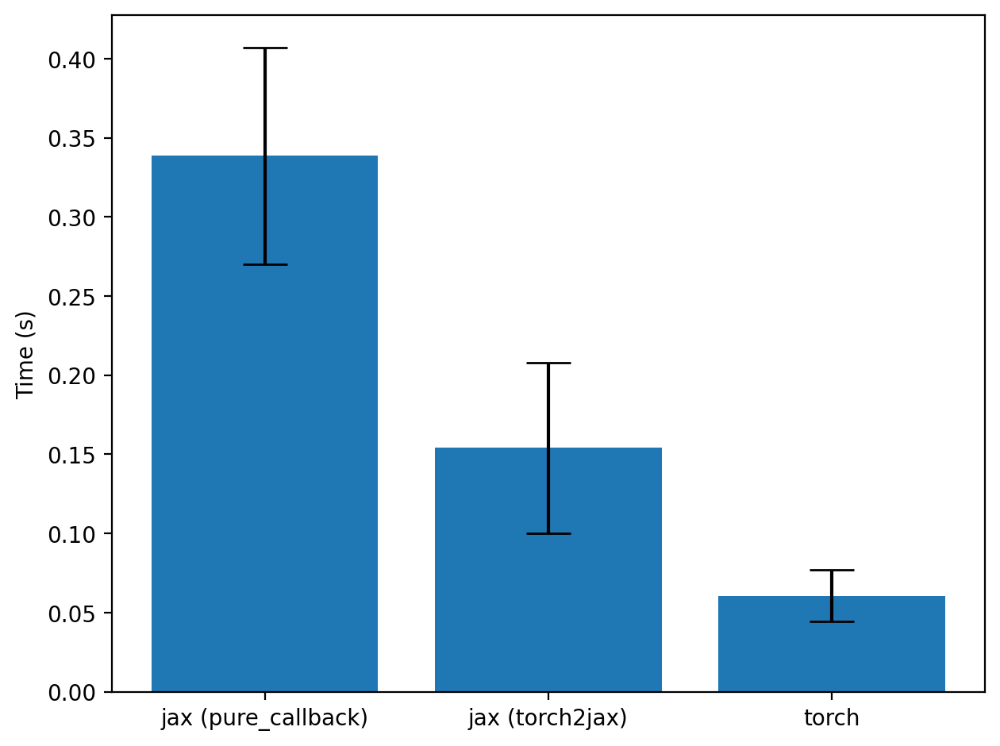

Calling BERT model from JAX (with BERT weights in JAX)
import random
import time
from tqdm import tqdm
from transformers import BertTokenizer, BertModel
from datasets import load_dataset
import torch
from torch import Tensor
from torch.func import functional_call
import jax
from jax import numpy as jnp
import matplotlib.pyplot as plt
import numpy as np
from torch2jax import tree_t2j, torch2jax
Loading the dataset and the model (in PyTorch)
dataset = load_dataset("wikitext", "wikitext-2-v1", split="train")
device = torch.device("cuda" if torch.cuda.is_available() else "cpu")
tokenizer = BertTokenizer.from_pretrained("bert-base-uncased")
model = BertModel.from_pretrained("bert-base-uncased")
model.to(device)
model.eval()
def tokenizer_torch(text: list[str]) -> dict[str, Tensor]:
encoded = tokenizer(text, padding="max_length", truncation=True, return_tensors="pt")
return {k: v.to(device) for (k, v) in encoded.items()}
Let's convert the torch model to a function, using torch.func.functional_call
params, buffers = dict(model.named_parameters()), dict(model.named_buffers())
def torch_fwd_fn(params, buffers, input):
return functional_call(model, (params, buffers), args=(), kwargs=input).pooler_output
nb = 16
text = [x["text"] for x in random.choices(dataset, k=int(1e3)) if len(x["text"]) > 100][:nb]
encoded_text = tokenizer_torch(text)
We do not need to specify output, the library will call the torch function ones to infer the output
jax_fwd_fn = jax.jit(torch2jax(torch_fwd_fn, params, buffers, encoded_text))
params_jax, buffers_jax = tree_t2j(params), tree_t2j(buffers)
encoded_text_jax = tree_t2j(encoded_text)
Taking gradients wrt model parameters
g_fn = jax.jit(jax.grad(lambda params: jnp.sum(jax_fwd_fn(params, buffers_jax, encoded_text_jax))))
g_torch_fn = torch.func.grad(lambda params: torch.sum(torch_fwd_fn(params, buffers, encoded_text)))
gs = g_fn(params_jax)
gs_torch = tree_t2j(g_torch_fn(params))
# let's compare the errors in gradients (they will be 0!)
total_err = 0
for k in gs.keys():
err = jnp.linalg.norm(gs[k] - gs_torch[k])
total_err += err
print(f"Total error in gradient: {total_err:.4e}")
Total error in gradient: 0.0000e+00
Timing the gains over pure_callback
def wrap_torch_fn(fn, output_shapes, device: str = "cpu"):
def numpy_fn(*args):
args = jax.tree.map(lambda x: torch.as_tensor(x, device=device), args)
out = fn(*args)
out = (out,) if isinstance(out, Tensor) else tuple(out)
out = [z.detach().cpu().numpy() for z in out]
return out
jax_output_shapes = jax.tree.map(lambda x: jax.ShapeDtypeStruct(x.shape, dtype_t2j(x.dtype)), output_shapes)
def wrapped_fn(*args):
return jax.pure_callback(numpy_fn, jax_output_shapes, *args)
return wrapped_fn
with torch.no_grad():
output_shapes = model(**encoded_text).pooler_output
jax_fwd_fn2 = jax.jit(wrap_torch_fn(torch_fwd_fn, output_shapes, device=device.type))
t1s, t2s, t3s = [], [], []
for i in tqdm(range(100)):
text = [x["text"] for x in random.choices(dataset, k=int(1e3)) if len(x["text"]) > 100][:nb]
encoded_text = tokenizer_torch(text)
encoded_text_jax = tree_t2j(encoded_text)
t = time.time()
out1 = jax_fwd_fn(params_jax, buffers_jax, encoded_text_jax)
out1.block_until_ready()
t = time.time() - t
t1s.append(t)
t = time.time()
out2 = jax_fwd_fn2(params_jax, buffers_jax, encoded_text_jax)[0]
out2.block_until_ready()
t = time.time() - t
t2s.append(t)
t = time.time()
with torch.no_grad():
out3 = model(**encoded_text).pooler_output
torch.cuda.synchronize()
t = time.time() - t
t3s.append(t)
plt.figure()
plt.bar(
["jax (pure_callback)", "jax (torch2jax)", "torch"],
[np.mean(t2s), np.mean(t1s), np.mean(t3s)],
yerr=[np.std(t2s), np.std(t1s), np.std(t3s)],
capsize=10.0,
)
plt.ylabel("Time (s)")
plt.tight_layout()
plt.savefig("../images/bert_from_jax.png", dpi=200, bbox_inches="tight", pad_inches=0.1)
plt.show()
